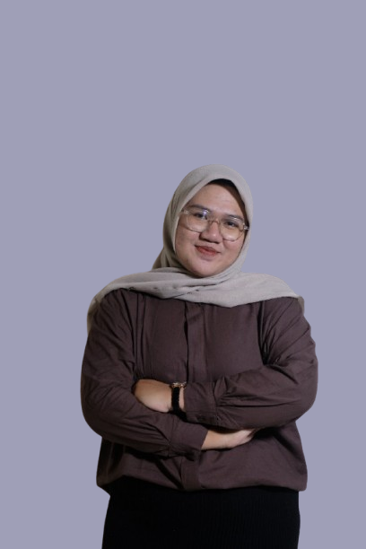

Selamat datang di website pribadi saya
Mahasiswa semester 6 Manajemen Informasi Kesehatan, Sekolah Vokasi Universitas Gadjah Mada. Berpengalaman dalam rekam medis, analisis data kesehatan, pengodean penyakit, dan desain grafis melalui berbagai proyek akhir semester.
D4 Manajemen Informasi Kesehatan - Universitas Gadjah Mada
Matematika dan Ilmu Pengetahuan - SMAN 1 Bae Kudus
Email: mauraanjellirizkyraharjo1804@mail.ugm.ac.id
Instagram: @mauraarhj